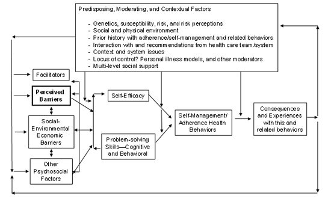

|
Definition
The concept of perceived barriers has been used in behavioral medicine for a long time in one form or another. The earliest widespread use of the barriers concept was associated with the Health Belief Model, as described in the following section. Webster's dictionary defines a barrier as "something that impedes or separates". Interestingly, the concept of barriers to accomplishment of a goal or a specified health behavior is assumed to be so straightforward that it is often left undefined. For the purposes of this summary, perceived barrier will be defined as "a person's estimation of the level of challenge of social, personal, environmental, and economic obstacles to a specified behavior or their desired goal status on that behavior."
This definition raises a number of issues. First, the adjective "perceived" (barriers) implies that the individual's judgment about the number and strength of barriers is a cognitive process; as such, this judgment may or may not be closely aligned with "objective" measures of social, environmental, or economic barriers. Many factors in addition to "objective barriers" influence a person's perception of barriers. Several of these factors, including past history, risk or threat perceptions, and perceived social support, influence beliefs about barriers. Figure 1 summarizes the presumed interactions among perceived barriers, "objective barriers," other psychosocial factors, facilitators or promoters, and potential background moderating variables. This figure is an attempt to synthesize the literature and to represent commonalities across theories and several of the key research issues—it is not based on any one theory.
Self-Management, Adherence, and Compliance
We assume that perceived barriers (and other factors) in turn lead to, at minimum, changes in self-efficacy expectations and problem-solving attempts. Self-efficacy and problem solving, along with potential moderating variables, in turn then lead to actual levels of the specified self-management or "adherence" health behaviors. The term self-management is preferred over adherence or compliance to reflect the role of agency and self-determination involved in health-promoting or disease management behaviors (Bandura, 1997 xClose
Bandura, A. (1997). Self-efficacy: The exercise of control. New York: W.H. Freeman.; Williams et al., 1998 xClose
Williams, G. C. & Deci, E. L. (1998). The importance of supporting autonomy in medical education. Annals of Internal Medicine, 129, 303-308.), rather than the more health care provider-centric term of compliance. Finally, the performance of the specified health behavior has consequences. The individual judges her performance and its results, and this judgment in turn reciprocally influences or adjusts one's perception of barriers. Thus, as summarized in Figure 1, perceived barriers are assumed to be malleable based on experience; different for different health behaviors; and influenced by, and in turn, influencing multiple factors.
Figure 1.
Logic Model of Role Of Perceived Barriers and Related Constructs to Patient Self Management/Adherence

Similar Constructs
Perceived barriers to self-management behaviors should be distinguished from related constructs, such as other health beliefs, self-efficacy expectations, behavioral intentions, personal illness models, and "objective barriers." Figure 1 illustrates the conceptual relationships among several of these constructs. The primary distinguishing feature of a perceived barrier is that it is a judgment of the degree of difficulty of a set of diverse factors (barriers) that can interfere with accomplishment of a specified health behavior. Several factors, such as past experience and one's personal illness model (Hampson, 1996 xClose
Hampson, S. E. (1996). Illness representations and self-management of diabetes. In J.Weinman & K. Petrie (Eds.), Perceptions of illness and treatment: Current psychological research and applications (Chur, Switzerland: Harwood Academic).) or illness representations (Leventhal et al., 1991 xClose
Leventhal, H. & Diefenbach, M. (1991). The active side of illness cognition. In J.A.Skelton & R. T. Croyle (Eds.), Mental representation in health and illness (pp. 246-272). New York: Springer-Verlag.), influence these judgments. Perceived barriers are strongly related to "objective" measurements of barriers, but are not the same. For example, a man facing his first colonoscopy might overestimate the barrier of pain or discomfort he is likely to experience, and this judgment might cause him to delay scheduling the test. Perceived environmental barriers to healthy eating and objective measures of factors such as the number of health food stores and healthy eating establishments in one's neighborhood and work vicinity will usually be related—but imperfectly. As discussed below under measurement issues, there are challenges in separating one's judgment of the magnitude of barriers to a behavior from the judged difficulty of the behavior; and in practice, making this distinction may be impractical. Some investigators have merged the operational measures of barriers and self-efficacy (Glasgow et al., 2001 xClose
Glasgow, R. E., Gillette, C., & Toobert, D. (2001). Psychosocial barriers to diabetes self-management and quality of life. Diabetes Spectrum, 14, 33-41.; McCauley et al., 1998) xClose
McCauley, E. & Mihalko, S. L. (1998). Measuring exercise-related self-efficacy. In J.L.Duda (Ed.), Advances in sport and exercise psychology measurement (Morgantown, WV: Fitness Information Technology). so that respondents are asked to state their confidence that they can successfully cope with specified barriers (barriers-based self-efficacy). This conjunction provides one solution to measurement challenges described below.
Perceived barriers are conceptually distinct from, but related
to the concept of perceived power from the
theory of planned behavior (McCauley
et al., 1998
xClose
McCauley, E. & Mihalko, S. L. (1998). Measuring exercise-related
self-efficacy. In J.L.Duda (Ed.), Advances in sport and
exercise psychology measurement (Morgantown, WV: Fitness
Information Technology).; Montano
& Kasprzyk, 2002)
xClose
Montano, D. E. & Kasprzyk, D. (2002). The theory of reasoned
action and the theory of planned behavior. In K.Glanz, F.
M. Lewis, & B. K. Rimer (Eds.), Health behavior and
health education: Theory, research and practice (3rd
ed., San Francisco: John Wiley & Sons).. Perceived
power, defined as the perceived effect of each condition in
making behavioral performance difficult or easy, is one of
the determinants of perceived behavioral control in this model
(Montano
& Kasprzyk, 2002
xClose
Montano, D. E. & Kasprzyk, D. (2002). The theory of reasoned
action and the theory of planned behavior. In K.Glanz, F.
M. Lewis, & B. K. Rimer (Eds.), Health behavior and
health education: Theory, research and practice (3rd
ed., San Francisco: John Wiley & Sons).). The barriers
concept has also been extended to related issues beyond the
scope of this report, to include issues such as barriers to
policy adoption, professionals' barriers to implementation
of evidence-based guidelines, organizational barriers to health
care system change, barriers experienced by caregivers, and
congruence between patient and provider perceptions of barriers
(Ruelaz
et al., 2007
xClose
Ruelaz, A. R., Diefenbach, P., Simon, B., Lanto, A., Arterburn,
D., & Shekelle, P. G. (2007). Perceived barriers to weight
management in primary care--perspectives of patients and providers.
Journal of General Internal Medicine, 22, 522.).
Finally, the converse issue of facilitators or supports for
a given behavior is also an important and, unfortunately,
an often neglected determinant of health behaviors (Glasgow
et al., 2005
xClose
Glasgow, R. E., Toobert, D. J., Barrera, M., Jr., & Strycker,
L. A. (2005). The Chronic Illness Resources Survey: Cross-validation
and sensitivity to intervention. Health Education Research,
20, 402-409.). Facilitators and
barriers are not just mirror images; conceivably a person
could have many or few barriers and many or few facilitators
or supports.
|